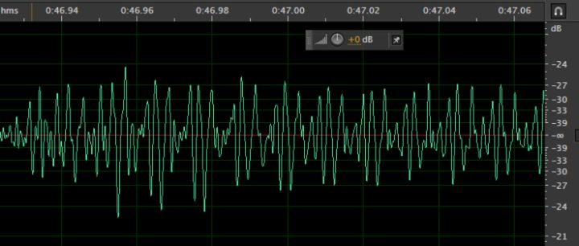
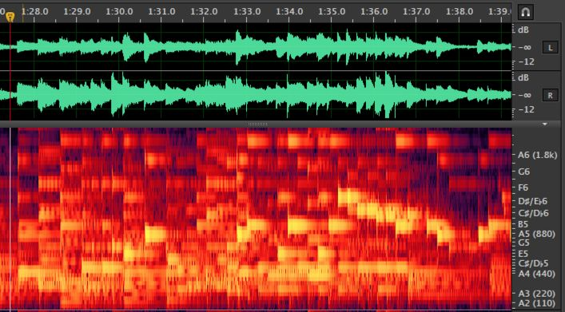
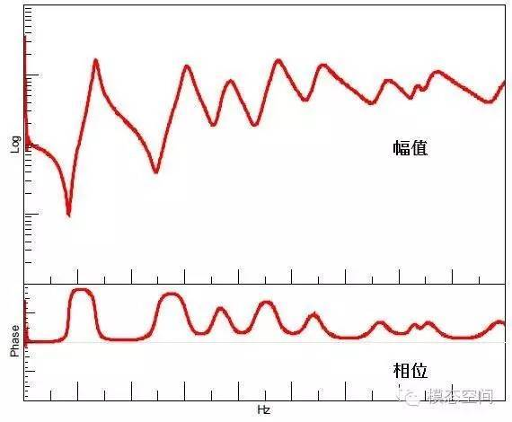
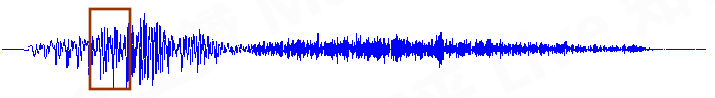
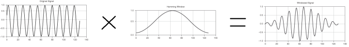
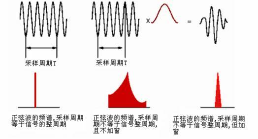
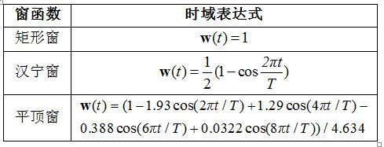
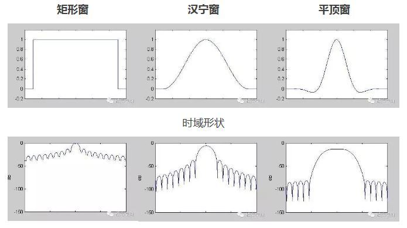
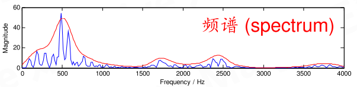
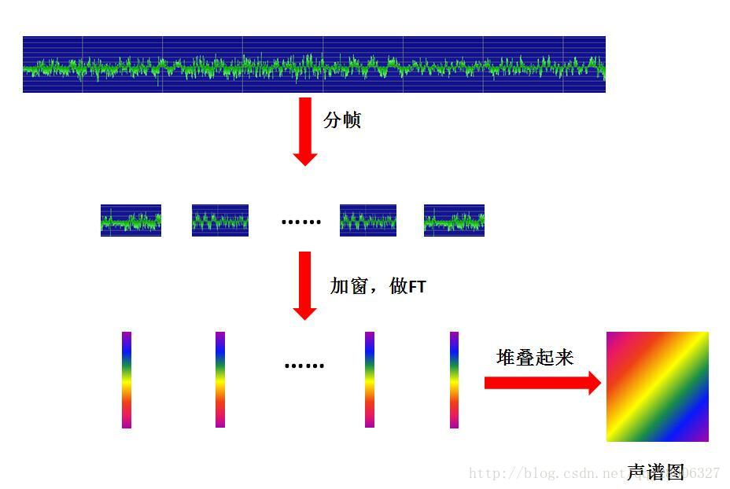

1. 音频特征
1.1. 认识声音
中学时，我们学过声音是由物体的 振动 产生的。 物体振动时激励着它周围的空气质点振动，由于空气具有可压缩性， 在质点的相互作用下，振动物体四周的空气就交替地产生压缩与膨胀，并且逐渐向外传播，从而形成声波。

当空气的这种波动传递到人耳时，人耳感受到的 气压的变化 ，也就感受到了声音。
提示
声音的传播其实就是声源(振动物体)的振动，传导到其周围的其他物质（比如空气粒子），形成扩散，直到传到人耳器官，人感受到声音。 这也就是为什么声音无法在真空中传播的原因。
声波传播方式不是物质的移动，而是能量的传播 。也就是说 质点并不随声波向前扩散 ，而仅在其原来的平衡位置附近振动，靠质点之间的相互作用影响到邻近的质点振动，因此，振动得以向四周传播，形成波动。
提示
质点振动方向平行于传播方向的波，称为纵波。质点振动方向垂直于波传播方向的波，称为横波。
声波在空气中传播时只能发生压缩与膨胀，空气质点的振动方向与声波的传播方向是一致的，所以空气中的声波是纵波。 声波在液体中传播一般也为纵波，但在固体中传播则既有纵波又有横波。
- 声波对气压的影响
空气中无任何质点波动时，存在大气压，也就是静压强 \(P_{atm}\)，而当物体振动时， 必然导致振动物体附近的空气压强发生变化，产生压强波动 \(P_{var}\)，也就是说声波导致的压强波动是叠加在大气压之上的，即
而 \(P_{atm}=1.01325×105Pa\) 。
提示
人耳感受到的声音大小其实就是气压大小，气压越大，对人耳产生的压力越大，人感受到的声音越响亮。
图 1.1.1 图片来源网络
通常说来，声波可以在弹性媒介中传播，如空气、液体和固体等，但不能在真空中传播。 弹性介质中粒子的运动产生任何振动行为（如振动的平板，扬声器等）都可以当成一个声源。 振动的粒子的前后运动使介质产生交替的按正弦变化的稠密（C）和稀疏（R）部分，如下图所示。产生的压力波在介质中以速度c进行传播。
图 1.1.2 图片来源网络
声波的传播速度c（m/s）依赖于弹性介质的物理特性，通常是
1.2. 认识声波
上文说道，声音是有物体的振动产生的。但物体究竟是如何振动的呢？产生的声波又是什么样的呢？
1.2.1. 物体的振动以及简谐振动
振动
振动（英语：vibration），指一个物体相对于静止参照物或处于平衡状态的物体的往复运动。 一般来说振动的基础是一个系统在两个能量形式间的能量转换， 振动可以是周期性的（如单摆）或随机性的（如轮胎在碎石路上的运动）。
来自：维基百科:振动
简谐振动（Simple harmonic motion)
简谐运动，或称简谐振动、谐振、SHM（Simple Harmonic Motion），即是最基本也是最简单的一种机械振动。 当某物体进行简谐运动时，物体所受的力跟位移成正比，并且力总是指向平衡位置。
来自：维基百科:简谐运动
比如下图中的弹簧运动就是简谐振动

其位移随时间变化的曲线就是正弦曲线。

又比如钟摆运动
提示
简谐振动只是一种理想状态，现实下运动物体会受到阻尼影响，如果没有持续的动力支撑，会慢慢衰减。


重要
简谐振动是周期性的，产生的是正弦曲线。非简谐运动产生的不是正弦曲线。
正弦曲线的数学表示：
其中，
\(A_0\) ：振幅，振动幅值，也就是曲线的最大值(绝对值)。
T: 周期，完成一次循环所需要的时间。
f：频率，每秒钟的循环次数，也等于1/T，T（周期，单位是时间）为完成一个振动循环所需要的时间；
θ：初相位，0时刻，波形的起始位置（角度）， \([0,2\pi]\) 之间。
正弦曲线也可以看做是圆周运动在y轴上的 投影 。

圆周的半径是振幅A，一次圆周运动的时间是周期T，0时刻起始位置和横轴的夹角是初相位 \(\theta\)
注解
正弦曲线和余弦曲线是一样的，只是相位差了90度。所以下文中除非特别说明，否则我们默认都是正弦曲线。
1.2.2. 什么是声波
声音是由物体振动产生的，物体振动会影响介质（通常是空气）的压力变换，并在介质中传播，这种传播成为 声波 。
观测传播介质（空气）中一个点的压力随时间变化，就得到了声波。


我们观测声波传播路径上任意一个点，测量这个点的气压随时间的变化，这样就变成了横轴为时间，纵轴为压力变化的图像.
声波是由物体的振动引起的，所以声波也是一种正弦波。对于声波可以用正弦函数描述。

警告
简谐振动产生的正弦曲线的纵坐标是位移变化。然后声波的曲线其纵轴不是位移，而是压力。
注解
当空气中没有声波时，也是存在气压的。气压距离标准值偏差越大，说明振动越剧烈，响度越大，所以振幅越大的波形表示声音越大。
纵坐标是压力，单位是Pa，0值 实际是标准大气压，上文我们讲过，声波的能量是叠加在大气压之上的。
波长，一个时间周期（振动周期）内，传播的距离
波形越紧密说明单位时间内振动的次数越多，频率越高，音高越高。
人和动物既可作为发声的声源，也可作为接受声音的接受者，但当作为声源和接受者时，二者的频率范围是不相同的，如下表所示。作为声源时频率范围较窄，而作为接受者时频率范围较宽
1.2.3. 纯音和复合音
相应于振动，声波也分为周期性声波和非周期性声波，最简单的周期声波是单频的声波，也称为纯音。 它是由简谐振动产生的频率固定、并按正弦变化的声波。与单频音相对应的是复合声，复合声（也称为复声）是由一些频率不同的单频音组成，
维基百科的定义
纯音(pure tone)在声学中指声压的时间波形为正弦函数的声音。
单一频率的声音，其瞬时值为与时间有关的正弦（余弦）函数表示的一简单声波。
理论上声源物体进行简谐振动产生的声音就是纯音。
声波分简单和复杂两种形式。由单一频率的正弦波产生的声音是纯音,如音叉 的声音，纯音是最简单、最单一的振动所产生的声波。 物理学上用频率和振幅两 个特征来说明纯音的性质。 复杂的波形是由若干个不同质的纯音融合而成。不同 频率和振幅的纯音相混合而成的声音称为复合音。
提示
现实世界中，纯音几乎是不存在的，一般需要人工产生。
生成纯音的代码如下：
from librosa.output import write_wav
import numpy as np
from IPython.display import Audio
import soundfile as sf
def wave(A=1.0,f=50,time=5,fs=44000,theta=0):
"""
生成制定参数的正弦波纯音数据
Parameters
----------
A: 幅值
f: 声波频率
fs: 采样率
theta: 相位
time: 声波时长，单位秒
"""
t= np.linspace(0,time,time*fs)
y=A*np.sin(2*np.pi*f*t+theta)
return y,fs
def make_wav_file(f,A=1.0):
"""
生成wav音频文件
:param f: 频率
:param A: 幅值
:return:
"""
y, fs = wave(A=A, f=f)
# 在 jupyter 中可以如下语句显示音频
# Audio(data=y,rate=fs)
# 保存到文件中
wav_name = '%sHz_%sPa.wav' % (f, A)
# 注意浏览器播放不支持浮点型的PCM，所以我们保存成 "PCM_16"
sf.write(file=wav_name, data=y, samplerate=fs, subtype="PCM_16")
生成音频文件
# 生成5HZ的纯音
make_wav_file(f=5,A=1.0)
# 生成20HZ的纯音
make_wav_file(f=20,A=1.0)
# 生成50HZ的纯音
make_wav_file(f=50,A=1.0)
# 生成500HZ的纯音
make_wav_file(f=500,A=1.0)
# 生成5000HZ的纯音
make_wav_file(f=5000,A=1.0)
# 生成50000HZ的纯音
make_wav_file(f=50000,A=1.0)
各种纯音试听
频率为50Hz的纯音
频率为500Hz的纯音
频率为5000Hz的纯音
但是现实世界中，纯音几乎是不存在的
疑问？
产生正弦波的声音是纯音，那么非正弦波的声音是什么？
现实当中，每时每刻都有很多个物体发声振动，产生声波。每个声音的频率、幅值、持续时间都是不同的。 我们听到的声音往往是很多的频率的叠加，比如这样。
百度百科的描述
复合音：由基音和泛音结合在一起形成的声音，叫做复合音。
复合音的产生是根据物体振动时，不仅整体在振动，它的部分同时也在振动，
因此，平时所听到的声音，都不只是一个声音，而是由许多个声音组合而成的，于是便产生了复合音。
试在钢琴上弹一较低的音，用心聆听，不难发现，除了最响的音之外，还有一些非常弱的声音同时在响，
这就是全弦的振动和弦的部分振动所产生的结果。
简单来说就是很多 声音（不一定是纯音） 混合在一起就变成了复合音。不同声音的声波叠加到一起就形成复合音的声波。
提示
注意，声波未必是周期性的
小技巧
人发出的语音声音是复合声音。
1.2.4. 频谱 Spectrum
上文说道，声波是正弦波，可以用正弦函数表示，并且声波是可以叠加的，我们看下多个正弦曲线是如何叠加的。


TODO
多个纯音叠加到一起的案例
既然声波可以叠加到一起，那能否把一段复合声音还原（分解）成原来的多个声音成分呢？
傅里叶变换
傅立叶是一位法国数学家和物理学家的名字，英语原名是 Jean Baptiste Joseph Fourier(1768-1830), Fourier 对热传递很感兴趣，于 1807 年在法国科学学会上发表了一篇论文，运用正弦曲线来描述温度分布， 论文里有个在当时具有争议 性的决断:任何连续周期信号可以由一组适当的正弦曲线组合而成。当时审查这个论文的人， 其中有两位是历史上著名的数学家拉格朗日(Joseph Louis Lagrange, 1736-1813)和拉普拉斯 (Pierre Simon de Laplace, 1749-1827)， 当拉普拉斯和其它审查者投票通过并要发表这个论文 时，拉格朗日坚决反对，在近 50 年的时间里， 拉格朗日坚持认为傅立叶的方法无法表示带有棱角的信号，如在方波中出现非连续变化斜率。法国科学学会屈服于拉格朗日的威望，拒 绝了傅立叶的工作，幸运的是，傅立叶还有其它事情可忙，他参加了政治运动，随拿破仑远 征埃及，法国大革命后因会被推上断头台而一直在逃避。直到拉格朗日死后 15 年这个论文 才被发表出来。
谁是对的呢?拉格朗日是对的:正弦曲线无法组合成一个带有棱角的信号。
但是，我们可以用正弦曲线来非常逼近地表示它，逼近到两种表示方法不存在能量差别，基于此，傅立叶是对的。
- 傅里叶变换
就是把一段信号分解成一系列不同频率、振幅、相位的正弦信号。对时域信号作傅立叶变换，得到的直接结果即为频谱Spectrum。

任何 周期 函数，都可以看作是不同振幅，不同相位正弦波的叠加。

我们知道，一个正弦信号的全部信息由它的频率、幅度以及初相位这三个参数来决定，也即， 知道了一个正弦信号的“三参数”也就知道了这个正弦信号的所有信息。 而一个复杂信号是由频率不同、幅度不同、初相位不同的许多正弦信号叠加而成的。
信号频谱
信号的频谱就是表示组成一个复杂信号的所有不同频率正弦信号的“三参数”， 换句话说，频谱表示了组成这个复杂信号的所有不同频率的正弦信号的“三参数”信息。
也就是说，人们用频谱把组成一个复杂信号的所有不同频率的正弦信号的参数都表示了出来。 反过来，我们可以通过信号频谱知道这个复杂信号包含哪些频率的正弦信号，以及这些正弦信号的幅度和初相位，
某个频率正弦的幅度大小代表了这个频率正弦信号对原信号的贡献程度，所以，知道了信号频谱也就知道了这个信号含有的哪些频率成分，这个信号的特性也就知道了， 这对于信号分析、传输（通信）以及信号处理具有决定性的作用。 通常，频谱的形式有两种，一种是图形（也称频谱图，从频谱图上可以看到不同频率正弦信号的“三参数”），另一种是函数式。
通过对波形数据的傅里叶变换，把波形中的每个频率拆开来，再在纵轴上展开，越往上频率越高。 频谱是三维的，越亮表示在这个频率上越响(振幅大)，越暗表示越弱。
所以频谱相对于波形图，是包含有更多信息的，唯一的缺点就是无法表示整体音量总和的大小，所以一般和波形配合观看。
注解
如两个单频信号幅值和频率相同，但相位相反，那么，当对这两个信号进行平均时，那么，它们的幅值将为0。 在汽车排气系统中，有一种主动消音机制，就是先接收声音，然后将声音反相回放回去，从而达到消音的目的， 利用的就是这个原理。
对于已经抵消了正弦信号，傅里叶变换是无法还原的。原因不需要解释吧！！！
小技巧
更加通俗易懂的理解傅里叶变换的讲解，请阅读： 傅里叶分析之掐死教程（完整版）
从技术层面介绍傅里叶变换的操作原理，请阅读：
FFT的理解
对时域信号作傅立叶变换，得到的直接结果即为频谱Spectrum。它是复数，复数的实部和虚部分别保存幅值和相位信息。 同时显示同一频谱的幅值和相位的图形称为波德图(bode)，如下图所示。
1.2.5. 名词
1.2.5.1. 频率–基频–音高
单位时间内(每秒)物体振动的次数，称为“频率”，用 f 表示，单位为赫兹。物体振动越快，频率就越高;物体振动越慢，频率就越低。
物体振动一周所 经历的时间，称为“周期”，记作 T，单位为秒。周期与频率之间具有以下关系: T=1/f。
在一个自然的复合音里，有一个振幅最大、频率最低的分音，也就是第一谐波，这个分音(或第一谐波)一般还被称为“基音”，它的振动频率被称为“基频”。 但对于人工合成的声音或者通过滤波处理后的声音(如过滤掉一些低频成分)，其基频并不等于第一谐波的频率。 例如，一个 300 赫兹的纯音与一个 400 赫兹的纯音叠加时，会产生一个复合波， 这个复合波就包括两个分音，其频率分别等于 300 赫兹和 400 赫兹，第一谐波的频率为 300 赫兹， 这个复合波的基频并不等于 300 赫兹，而是等于 100 赫兹。
音高是人耳对物体振动频率的听觉感受,其高低主要决定于声波频率。一般来说，振动频率越高，感受到的音高也越高;振动频率越低，感受到的音高也越低。 对复合波音高的感知，主要决定于基频。一般来说，女同志的音高比男的高，童声的音高比成人高。
1.2.5.2. 基音–陪音–谐波–分音–泛音
一个复合音是由多个频率不同的纯音组成的， 通过一定的方法可以把复合音 分解为一定数目的纯音，这些被分解出来的纯音在物理学上被称为“分音”， 在 电声学上被称为“谐波”。其中，那个振幅最大、频率最低的分音，被称为“基 音”，也被称为“第一谐波”; 其他分音的振幅一般都比基音的振幅小，而频率 都是基音的整数倍，这些音被称为“陪音”，在音乐中也被称为“泛音”。
1.3. 语音学
1.3.1. 发声原理
1.3.2. 听觉感应
1.4. 数字信号处理
对于人类的语音信号而言，实际处理一般经过以下步骤：
人嘴说话——>声电转换——>采样（模数转换）——>量化（将数字信号用适当的数值表示）——>编码（数据压缩）——> 传输（网络或者其他方式） ——>解码（数据还原）——>反采样（数模转换）——>电声转换——>人耳听声。
1.4.1. 模数转换
麦克风设备感受空气压力变化，并且把压力转换成电信号，这里电信号也就是模拟信号，随时间连续变化的电信号。 然后需要把模拟信号转换成计算机的数字信号。
模拟信号 到 数字信号转换 (analog-to-digital conversion,A/D转化，模数转换)的过程分为两步：
采样/抽样 sampling
量化 quantization
声波是时间上的连续变化，而计算机只能处理离散数据，是无法记录和处理连续值的。 解决方法就是每隔固定时间（很短）从记录当前波形的幅值并记录下，就把连续值进行了离散化，这个过程就是抽样，每秒钟采集的样本点数称为采样率。
提示
电脑中的声音文件是用数字0和1来表示的。 所以在电脑上录音的本质就是把模拟声音信号转换成数字信号。 反之，在播放时则是把数字信号还原成模拟声音信号输出。
- 采样率
采样率（也称为采样速度或者采样频率）定义了每秒从连续信号中提取并组成离散信号的采样个数，它用赫兹（Hz）来表示。 采样频率的倒数叫作采样周期或采样时间，它是采样之间的时间间隔。 采样定理指采样频率必须大于被采样信号带宽的两倍，另外一种等同的说法是奈奎斯特频率必须大于被采样信号的带宽。
提示
采样频率必须至少是声波频率的两倍才可以，也就是一个声波周期内需要至少采集到两个点，才能还原这个声波，采集的点数越多还原的越精准。
人的说话频率基本上为300Hz-3400Hz，但是人耳朵听觉频率基本上为20Hz-20000Hz。
采样频率越高声音的还原就越真实越自然。 在当今的主流采集卡上， 采样频率一般共分为22.05KHz、44.1KHz、48KHz三个等级，22.05KHz只能达到FM广播的声音品质， 44.1KHz则是理论上的CD音质界限，48KHz则更加精确一些。
量化
把实数值表示为整数的过程为 量化(quantization) 。
- 量化位数
声音采集卡通过采集到声波幅值是实数值，这个实数值是某个区间内[-m,m]之间的连续值，通过采样得到一个个离散的点， 但这些离散点的值是实数值，需要把实数值数转换成整数，整数再转换成二进制进行存储，存储二进制时的位数就是量化位数。 比如用10位(10bit)、16位（16bit）、20位(20bit)、24位(24bit)、32位(32bit)等等进行存储。
实数值转换为离散值的方法就是，把实数区间[-m,m]（无穷个值）映射到一个整型区间[-n,n]（加上0，一共有2n+1个值）， 实数区间[-m,m]分割成2n+1个子区间，对应子区间的整数作为映射输出值。
整型数的位数多少影响着保存数据的精度，位数越多能存储整数区间也就越大，能表示的实数精度就越高，录制和回放的声音就越真实。
通常市面上是这样说，16bit/24bit/32bit。数值越高声音越好。位数多少决定了n的大小（空间大小）。
比如：
16bit位宽，n值为 \(2^{15}-1=32767\) (为什么是15而不是16？因为有一位是符号位。为什么减1，因为去掉0),32767 代表最大幅值；
32bit位宽，n值为 \(2^{31}-1=2147483647\) ，2147483647代表最大幅值。
警告
重点来了！！！！ ，32767 和 2147483647 都代表最大幅值，两者对应幅值是一样的。 也就是说不同采样音频数据的幅值不可比较。
位宽越大，精度越高，声音的音质越好。与声音大小（幅值大小）无关！！！！
个人理解：实数值转整数，也是一种采样离散化。采样时时间维度的离散化，量化是振幅的离散化。
1.4.2. 音频文件–WAV
PCM
脉冲编码调制（英文：Pulse-code modulation，缩写：PCM）是一种模拟信号的数字化方法。 PCM将信号的强度依照同样的间距分成数段，然后用独特的数字记号（通常是二进制）来量化。
– 维基百科
PCM就是上一节说的模数转换，其得到的结果就是声波数据的采样数据，是一个整数序列，每个整数表示声波的振幅值。 由于采样率比较大，一般每秒几万个点，所以PCM数据是比较大。实际应用中往往会对其进行压缩，比如MP3等等，就是对PCM的一种压缩后的结果。
音频压缩
音频压缩（区别于动态压缩）属于数据压缩的一种，用以减少音频流媒体的传输带宽需求与音频档案的存储大小。按压缩方法可以分为无损压缩和有损压缩。
得到音频采样的整数数据序列后，就需要存储在一个文件中，最常用的文件格式是WAV。
WAV
WAV(Waveform Audio File Format) 是一种文件格式，是微软与IBM公司所开发在个人计算机存储音频流的编码格式。 固定长度的文件头+PCM音量数据流 组成一个wav文件存储在计算机中。
文件头中记录着pcm音频流的一些信息，比如采样率、量化位数、声道数等等。

利用python查看一个wav文件的信息：
>>> import soundfile as sf
>>> sf.info("wave/比较平缓.wav")
samplerate: 44100 Hz # PCM采样率
channels: 1 # 声道数
duration: 31.299 s # 音频时长是31.299秒
format: WAV (Microsoft) [WAV] # 文件格式
subtype: Signed 16 bit PCM [PCM_16] # 有符号16bit整型数据
- 声道 channel
一个音频文件wave是可以同时存储过个pcm音频流的，如果只有一个音频流就称为单声道，两个称为立体声（包含左声道和右声道）。 当然一般情况下，两个音频流应该是两个不同的采集卡同时采集得到的结果。
>>> y,sr=sf.read("wave/比较平缓.wav")
>>> y.shape # 样本数据的长度
(1380288,)
>>>sr # 采样率
44100
>>> y[:10] # 前10个样本点
array([ 0, 1, 2, 1, 0, 0, -2, -2, -2, -3], dtype=int16)
1.5. 分帧与加窗
1.5.1. 预加重处理
1.5.2. 分帧与加窗处理
我们已经知道采集到音频数据，是时间轴上的数据序列，声波随着之间变化，声波在整个时间轴上是 非周期性 的，这导致计算机很难处理。 但在一个很短的时间切片内（10ms-50ms），声波是可以近似看为周期性的。所以我们可以把长序列数据切片，每片称为一帧。
那么一帧有多长呢？帧长要满足两个条件：
从宏观上看，它必须足够短来保证帧内信号是平稳的。前面说过，口型的变化是导致信号不平稳的原因，所以在一帧的期间内口型不能有明显变化，即一帧的长度应当小于一个音素的长度。正常语速下，音素的持续时间大约是 50~200 毫秒，所以帧长一般取为小于 50 毫秒。
从微观上来看，它又必须包括足够多的振动周期，因为傅里叶变换是要分析频率的，只有重复足够多次才能分析频率。语音的基频，男声在 100 赫兹左右，女声在 200 赫兹左右，换算成周期就是 10 毫秒和 5 毫秒。既然一帧要包含多个周期，所以一般取至少 20 毫秒。
这样，我们就知道了帧长一般取为 20 ~ 50 毫秒，20、25、30、40、50 都是比较常用的数值， 甚至还有人用 32（在程序猿眼里，这是一个比较「整」的数字）。
取出来的一帧信号，在做傅里叶变换之前，要先进行「加窗」的操作，即与一个「窗函数」相乘， 如下图所示：
加窗的目的是让一帧信号的幅度在两端渐变到 0。渐变对傅里叶变换有好处，可以提高变换结果（即频谱）的分辨率，具体的数学就不讲了。 加窗的代价是一帧信号两端的部分被削弱了，没有像中央的部分那样得到重视。弥补的办法是，帧不要背靠背地截取，而是相互重叠一部分。
相邻两帧的起始位置的时间差叫做帧移，常见的取法是取为帧长的一半，或者固定取为 10 毫秒。
每次FFT变换只能对有限长度的时域数据进行变换，因此，需要对时域信号进行信号截断(分帧)。 即使是周期信号，如果截断的时间长度不是周期的整数倍（周期截断），那么，截取后的信号将会存在泄漏。 为了将这个泄漏误差减少到最小程度（注意我说是的减少，而不是消除），我们需要使用加权函数，也叫窗函数。 加窗主要是为了使时域信号似乎更好地满足FFT处理的周期性要求，减少泄漏。
如下图所示，若周期截断，则FFT频谱为单一谱线。若为非周期截断，则频谱出现拖尾，如图中部所示，可以看出泄漏很严重。 为了减少泄漏，给信号施加一个窗函数（如图中上部红色曲线所示），原始截断后的信号与这个窗函数相乘之后得到的信号为上面右侧的信号。 可以看出，此时，信号的起始时刻和结束时刻幅值都为0，也就是说在这个时间长度内，信号为周期信号，但是只有一个周期。 对这个信号做FFT分析，得到的频谱如下部右侧所示。相比较之前未加窗的频谱，可以看出，泄漏已明显改善，但并没有完全消除。 因此，窗函数只能减少泄漏，不能消除泄漏。
因此，加窗的目的是为了减少泄漏。但加窗不能消除泄漏，只能减少。
常见窗口函数：
矩形窗、汉宁窗和平顶窗的时域形状和频域特征如下图所示，可以看出，窗函数不同，时域和频域都是不同的。
提示
关于加窗的更详细解释，请参见知乎文章： 什么是窗函数? https://zhuanlan.zhihu.com/p/24318554
对一帧信号做傅里叶变换，得到的结果叫频谱， 它就是下图中的蓝线：
图中的横轴是频率，纵轴是幅度。
频谱上就能看出这帧语音在 480 和 580 赫兹附近的能量比较强。 语音的频谱，常常呈现出 「精细结构」 和 「包络」 两种模式。 「精细结构」 就是蓝线上的一个个小峰，它们在横轴上的间距就是基频，它体现了语音的音高——峰越稀疏，基频越高，音高也越高。 「包络」 则是连接这些小峰峰顶的平滑曲线（红线），它代表了口型，即发的是哪个音。 包络上的峰叫 共振峰 ，图中能看出四个，分别在 500、1700、2450、3800 赫兹附近。 有经验的人，根据共振峰的位置，就能看出发的是什么音。 对每一帧信号都做这样的傅里叶变换，就可以知道音高和口型随时间的变化情况，也就能识别出一句话说的是什么了。
对于声音数据的分析，可以分为时域分析和频域分析。时域分析是指
语音信号的时域分析就是分析和提取语音信号的时域参数，也就是直接对波形进行处理。
1.6. 声音的感官度量
1.6.1. 声压与声压级(Sound Pressure Level,SPL)
声压是定量描述声波的最基本物理量，它是由生扰动产生的逾量压强，是空间位置和时间的函数。 由于声压的测量比较容易实现，而且通过声压的测量也可以间接求得质点振速等其它声学参量， 因此，声压已经成为人们最为普遍采用的定量描述声波性质的物理量。
通常讲声压指的是有效声压，即在一定时间间隔内将瞬时声压对时间求方均根值所得。
设语音长度为T，离散点数为N，则有效声压的计算公式为
式中，x表示语音信号采样点的幅值。
提示
上式中，x的值原意应该是声波的压力值。上文讲过声波信号数字化处理后，在计算机存储的音频文件中，x值代表的是声波的振幅。 当用振幅x计算上式时，得到的结果并不是真正的有效声压，仅仅是一种近似表示。
- 声压级(Sound Pressure Level,SPL)
声音的有效声压与基准声压之比，取以10为底的对数，再乘以20，即为声压级，通常以符号 \(L_p\) 表示，单位为分贝dB。
分贝 分贝是声级测量中最常用的单位，被简写为dB。其中小写的d代表英文decibel即分贝，而大写的B代表Bel即贝尔， 采用小写d和大写B主要说明分贝和贝尔之间的关系为1:10即1分贝等于十分之一贝尔。 需要说明的是，0dB并非代表完全静寂状态，而是代表人耳的听阈点，也就是听力正常的人所能觉察到的最低声压级。
——功率增加一倍代表增益提升3dB（如混音中，一轨声音为100dB，将这轨复制一份一同播放，总音量将为103dB， 而非100+100=200dB），而电压增加一倍代表增益提升6dB。
式中， \(p_e\) 为待测声压的有效值； \(p_{ref}\) 为参考声压（一般是标准大气压）。
1.6.2. 声强与声强级(Intensity Level,IL）
在物理学中，声波在单位时间内作用在与传递方向垂直的单位面积上的能量称为声强。声强用I表示，单位为瓦/平米。
日常生活中能听到的声音其强度范围很大，最大和最小之间可大 \(10^{12}\) 倍。
心理物理学的研究表明，人对声音强弱的感觉并不是与声强成正比，而是与其对数成正比的。 当人耳听到两个强度不同的声音时，感觉的大小大致上与两个声强比值的对数成比例。 因此，用对数尺度来表示声音强度的等级，其单位为分贝(dB)。
在声学中用 \(1x10^{-12} W/m^2\) 作为参考声强( \(I_0\) )。
1.6.3. 声压与声强的关系
对于球面波和平面波，声压与声强的关系是
式中， \(\rho\) 为空气密度; c 为声速。在标准大气压和 \(20^oC\) 的环境下， \(\rho \cdot c =408\) 。 该数值为国际单位值，也叫瑞利，称为空气对声波的特性阻抗。
提示
声压反应的是压力，声强反应的是能量，如果忽略 \(\rho \text{和} c\) ，二者就是平方关系。
1.6.4. 响度
响度
响度（loudness又称音响或音量），是与 声压级 （中文维基百科这里写的是声强，应该是错误的， 英文词条里写的是 sound pressure level，SPL ）相对应的声音大小的感知量。声压级是客观的物理量，响度是主观的心理量。 响度不仅跟声强有关，还跟频率有关。
– 维基百科
响度描述的时声音的响亮程度，表示人耳对声音的主管感受，其计量单位是宋。 定义为声压级为40dB的1khz纯音的响度为1宋。 人耳对声音的感觉，不仅和声压有关，还和频率有关 。声压级相同，频率不同的声音，听起来响亮程度也不同。如空压机和电锯，同是100dB声压级的噪声，听起来电锯声要响的多。
按照人耳对声音的感觉特性，依据声压和频率定出人对声音的主观音响感觉量，称为响度级，单位为方，符号是phon。 根据国际协议规定，0dB声强级的1000Hz的纯音的响度级定义为0 phon。其他频率声音的声级与响度级的对应关系，要从等响度曲线才能查出。

关于响度的认识 虽然人而表现为声压敏感组织，但从人耳接受声波并对声波进行分析的方式来说，振幅因素和响度其实并没有直接的的关系。 例如空压机与电锯，同是100分贝声压级的噪声．听起来电锯声要响得多。很明显，人耳对于不同的信号频率存有不同的敏感度， 所以声波频率和声压或者说振幅是影响人耳对响度感知的两个主要因素。从心理声学角度考虑，人对响度的感觉除了上述两种之外， 还有来自于信号持续时间和对于临界带宽频率的控制的因素。通常，人对于一个声信号响度级的识别以200ms（毫秒，1000ms=1s）为界， 当信号的持续时间低于200ms的时候，持续时间越短，信号的响度越低。临界带宽频率控制这里不讲深， 可以简单理解成，相同声强的两个声音，频率越丰富的，人耳感觉到的响度越大。
从某种意义上说，提高响度的所有途经，均是为了激发更多的毛细胞，从而达到增加临界带宽数量的目的。
1.6.5. 音量计算
人耳感受声音强度的感知量是 响度 ，响度受到声压和频率同时影响的。 但在实际的应用中，音频数据的频率是很难获得的，所以通常都是直接使用 声压级 来表示音量的大小。
但是计算声压级时是需要用有 效声压 除以 基准声压 的，基准声压表示的标准大气压。
我们仅有的是音频采样数据（振幅值），数据只是数据，只有经过音响设备播放出来才能产生实际声音（声压）。
有效声压： ， 我们用音频采样的振幅值替代。
基准声压： ， 基准声压就类似一个对比的基准线，把音频采样的振幅值归一化到[-1,1]之间即可，归一化的方法就是振幅除以采样位宽的最大值。
为什么没用平方，平方容易受到一些极大值点的影响，不够平稳。
警告
利用音频采样计算的音量值，并不是实际的感知量响度，也不是物理量声压级，不能表示真实的声音大小，仅仅是一种相对值表示，其值本身没啥意义。
1.6.6. 频率与音高
物体在1秒内振动的次数叫频率。其单位是赫兹，简称赫，符号为Hz。物体振动得越快，频率越大。 频率是物理量，其对应的感知量是音高，即用人的主观感觉来评价所听到的是高调还是低调。 音调跟发声体振动的频率关系是：频率越大，音调越高；频率越小，音调越低。
美(Mel)，是心理声学测量音高的单位。1000美是1000Hz纯音40dB SL时的音高。 音调高的声波具有高美值，音调低的声波美值就低，但 不是线性关系 。例如，将1000Hz纯音的频率翻番至2000Hz， 其40dB的声音音高从1000Mel变成1500Mel，而不是2000Mel，如果要达到2000Mel，需要频率3000Hz。
总结
声音感知量和物理量之间不是线性关系。
1.7. 时域分析
语音信号的时域分析是指对语音波形执行直接的操作，而将频域信号处理定义为对语音信号的傅里叶表示执行操作。
短时的意思是对语音波形的一帧（短时间片段）进行操作。
1.7.1. 短时能量
- 定义
当前声音片段的能量大小。能量越大响度越大。
1.7.2. 短时平均幅度
- 定义
当前声音片段的平均幅度。
1.7.3. 短时过零率
- 定义
过零率体现的是信号过零点的次数，体现的是频率特性。因为需要过零点，所以信号处理之前需要中心化处理
- 公式
1.7.3.1. 短时自相关函数
省略
1.8. 频域分析
某些比较宽泛的语音特征（例如，能量、基音、浊音的出现、塞音的成阻、擦音，等等）可以直接从波形上来解释，但是， 在语音识别（以及人的听觉处理）等很多计算机应用中，要求对组成声音的频率做出不同的表示，并以此作为这些应用的基础。
傅里叶分析指出，每一个复杂波都可以表示为很多频率不同的正弦波的总和。
对一个时域信号进行傅里叶变换，就可以得到的信号的声谱（spectrum），信号的频谱由两部分构成：幅度谱和相位谱。
频域（frequency domain）是指在对函数或信号进行分析时，分析其和频率有关部分，而不是和时间有关的部分[1]，和时域一词相对。
一般是通过傅里叶变换把一段时序信号变成频域数据。
根据原信号的不同类型，我们可以把傅立叶变换分为四种类别:
非周期性连续信号 – 傅立叶变换(Fourier Transform)
周期性连续信号 – 傅立叶级数(Fourier Series)
非周期性离散信号 – 离散时域傅立叶变换(Discrete Time Fourier Transform)
周期性离散信号 – 离散傅立叶变换(Discrete Fourier Transform)
相关名词解释:
- FT（Fourier Transformation）
傅里叶变换。就是我们理论上学的概念，但是对于连续的信号无法在计算机上使用。其时域信号和频域信号都是连续的。
- DTFT（Discrete-time Fourier Transform）
离散时间傅里叶变换。这里的“离散时间”指的是时域上式离散的，也就是计算机进行了采样。不过傅里叶变换后的结果依然是连续的。
- DFT（Discrete Fourier Transform）
离散傅里叶变换。在DTFT之后，将傅里叶变换的结果也进行离散化，就是DFT。
也就是说：FT时域连续、频域连续；DTFT时域离散、频域连续；DFT时域离散、频域离散。
- FFT（Fast Fourier Transformation）
快速傅里叶变换。就是DFT的快速算法，一般工程应用时用的都是这种算法。
- FS（Fourier Series）
傅里叶级数。是针对时域连续周期信号提出的，结果是离散的频域结果。
- DFS（Discrete Fourier Series）
离散傅里叶级数。是针对时域离散周期信号提出的，DFS与DFT的本质是一样的。
提示
DFT 只能处理周期信号
快速傅里叶变换（FFT），它是一种用来计算DFT（离散傅里叶变换）和IDFT（离散傅里叶反变换）的一种快速算法。
随机信号是无法做傅里叶变换的。
在用计算机处理音频信号时，我们使用的是 DFT（Discrete Fourier Transform）离散傅里叶变换，具体算法是 FFT（Fast Fourier Transformation）。 比如scipy和numpy都有提供相应的功能函数。
1.8.1. 声谱(spectrum)和时频谱(spectrogram)
声谱表示某一时刻（一帧语音信号）经过FFT得到的频率成分，其横轴是频率，纵轴是振幅（或者能量）。 而时频谱(spectrogram)表示这些不同的频率成分是如何使波形随着时间的改变而改变的，也就是把每帧的声谱(spectrum)拼接（按照时间轴）起来， 其横轴是时间，纵轴是频率，颜色深浅表示振幅（能量）
一段声音的声波和频谱示例
def specshow(y,sr):
D = np.abs(librosa.stft(y))
plt.figure(figsize=(30,20))
plt.subplot(211)
librosa.display.specshow(librosa.amplitude_to_db(D,ref=np.max),y_axis='hz', x_axis='time')
plot_wave(y=y,sr=sr,time=y.shape[0]/sr)
#plt.figure(figsize=(30,10))
y, sr = librosa.load("wave/比较平缓.wav")
display(Audio(data=y,rate=fs))
specshow(y,sr)
对时域信号进行傅立叶变换(FFT)时， 可以用多种不同的函数来表示计算结果，如频谱、自谱、功率谱密度等等，并且这些函数还有不同的格式，如Peak，RMS和Peak-Peak。 到底用哪个函数来表示更贴切，它们有什么区别呢？在讨论这些谱函数之前，让我们明确一下Peak，RMS和Peak-Peak的定义。
基频
共振峰
包络
1.8.2. 短时傅里叶变换 Short-time Fourier transform (STFT)
把音频的每一帧利用快速傅里叶变换FFT转化成频域数据。
时域信号->分帧->每一帧单独处理->加窗->FFT->频域结果（复数）->所有帧结果拼接成时间序列
短时傅里叶变换Short-time Fourier transform (STFT)的代码过程
def stft(y, n_fft=2048, hop_length=None, win_length=None, window='hann',
center=True, dtype=np.complex64, pad_mode='reflect'):
"""Short-time Fourier transform (STFT)
Returns a complex-valued 复数 matrix D such that
幅度谱：`np.abs(D[f, t])` is the magnitude of frequency bin `f`
at frame `t`
相位谱：`np.angle(D[f, t])` is the phase of frequency bin `f`
at frame `t`
Parameters
----------
y : np.ndarray [shape=(n,)], real-valued
the input signal (audio time series)
n_fft : int > 0 [scalar]
FFT window size
hop_length : int > 0 [scalar]
帧（窗口）的重叠部分长度。默认是 `win_length / 4`
number audio of frames between STFT columns.
If unspecified, defaults `win_length / 4`.
win_length : int <= n_fft [scalar]
Each frame of audio is windowed by `window()`.
The window will be of length `win_length` and then padded
with zeros to match `n_fft`.
时序数据分帧的帧长度，同时也是窗口函数的长度。
If unspecified, defaults to ``win_length = n_fft``.
window : string, tuple, number, function, or np.ndarray [shape=(n_fft,)]
- a window specification (string, tuple, or number);
see `scipy.signal.get_window`
- a window function, such as `scipy.signal.hanning`
- a vector or array of length `n_fft`
窗口函数
.. see also:: `filters.get_window`
center : boolean
- If `True`, the signal `y` is padded so that frame
`D[:, t]` is centered at `y[t * hop_length]`.
- If `False`, then `D[:, t]` begins at `y[t * hop_length]`
dtype : numeric type
Complex numeric type for `D`. Default is 64-bit complex.
pad_mode : string
If `center=True`, the padding mode to use at the edges of the signal.
By default, STFT uses reflection padding.
Returns
-------
D : np.ndarray [shape=(1 + n_fft/2, t), dtype=dtype]
STFT matrix
"""
# By default, use the entire frame
if win_length is None:
win_length = n_fft
# Set the default hop, if it's not already specified
if hop_length is None:
hop_length = int(win_length // 4)
# 获取窗口函数。其实是一个矩阵，用这个矩阵和原始帧数据相乘。
fft_window = get_window(window, win_length, fftbins=True)
# Pad the window out to n_fft size
# 窗口函数两端补0 令其长度等于n_fft
fft_window = util.pad_center(fft_window, n_fft)
# Reshape so that the window can be broadcast
# reshape时 -1 代表这个维度保持原来的值不变
fft_window = fft_window.reshape((-1, 1))
# Check audio is valid
util.valid_audio(y)
# Pad the time series so that frames are centered
if center:
y = np.pad(y, int(n_fft // 2), mode=pad_mode)
# Window the time series.
# 对输入的时序数据进行分帧(窗)，每一帧的长度是n_fft
y_frames = util.frame(y, frame_length=n_fft, hop_length=hop_length)
# Pre-allocate the STFT matrix
# 提前申请好 用来保存STFT结果的矩阵 shape=(1 + n_fft // 2,帧的数量)
#
stft_matrix = np.empty((int(1 + n_fft // 2), y_frames.shape[1]),
dtype=dtype,
order='F')
# how many columns can we fit within MAX_MEM_BLOCK?
n_columns = int(util.MAX_MEM_BLOCK / (stft_matrix.shape[0] *
stft_matrix.itemsize))
# fft_window.shape = (n_fft,1)
# 这个循环是批量算的，不是一帧一帧算，而是一次循环算n_columns帧
for bl_s in range(0, stft_matrix.shape[1], n_columns):
bl_t = min(bl_s + n_columns, stft_matrix.shape[1])
# RFFT(实数FFT) and Conjugate here to match phase(相位) from DPWE code
# fft用的是scipy.fftpack
stft_matrix[:, bl_s:bl_t] = fft.fft(fft_window *
y_frames[:, bl_s:bl_t],
axis=0)[:stft_matrix.shape[0]]
return stft_matrix
对时序信号通过FFT处理后，得到的是复数矩阵D(shape=(频率区间，帧数量))，其中每个值是一个复数，形如 \(D[f,t]=a+bj\) 。 实数部分a代表当前频率f分支正弦信号的幅值，虚数部分b代表余弦信号的幅值。
通过对D进行运算可以分别得到幅度谱、相位谱、能量谱、功率谱。
- 幅度谱
np.abs(D[f, t]) is the magnitude of frequency bin f at frame t
- 相位谱
np.angle(D[f, t]) is the phase of frequency bin f at frame t
- 能量谱
np.abs(D[f, t])**2 is the power spectrum of frequency bin f at frame t
- 功率谱
xxxxx
提示
复数的绝对值
复数的绝对值定义为：若 \(z=a+bi\) ，则 \(|z|=\sqrt{a^2+b^2}\) 。 其意义是复数的绝对值就是复数向量的模长，语音信号FFT的结果进行绝对值（求模）运算得到的时幅值。
提示
如何得到D对应的频率值?
scipy.fftpack.fftfreq 和 numpy.fft.fftfreq 了解下。
要理解能量谱和功率谱，首先要弄明白能量有限信号和功率有限信号（参看之前的文章能量信号和功率信号的分别）。
能量谱也叫能量谱密度，能量谱密度描述了信号或时间序列的能量如何随频率分布。能量谱是原信号傅立叶变换的平方。
更多讨论可以参看： 信号频域分析方法的理解（频谱、能量谱、功率谱、倒频谱、小波分析）
1.8.3. 倒频谱
倒频谱（Cepstrum）也叫倒谱、二次谱和对数功率谱等。倒频谱的工程型定义是： 信号功率谱对数值进行傅立叶逆变换的结果。（信号→求功率谱→求对数→求傅里叶逆变换）
为什么翻译作倒频谱呢？我个人的理解是，频谱（功率谱）反应的频率特征点横坐标是频率f（Hz），在倒频谱中对应的特征点的横坐标是时间t（s），而f与t互为倒数。从这里也可以看出，虽然倒频谱也叫“频谱”，其横坐标却并不是频率，而是时间。
那么倒频谱有什么好处呢？
“该分析方法方便提取、分析原频谱图上肉眼难以识别的周期性信号，能将原来频谱图上成族的边频带谱线简化为单根谱线，受传感器的测点位置及传输途径的影响小。” 这都是啥意思？一条条解释：
1.方便提取、分析原频谱图上肉眼难以识别的周期性信号
我们知道，频谱分析就是为了提取原始信号中的周期性信号的，怎么频谱中的信号还会有周期性？这就又涉及到两个概念：调制和边频带。
调制分为幅值调制和频率调制。下面以齿轮的幅值调制为例进行说明：齿轮的振动信号主要包括两部分，分别是齿轮啮合振动信号（高频）和齿轮轴的转频振动信号（低频），时域和频域曲线分别如下图所示：
高频信号和低频信号时域波形
高频信号和低频信号的频域波形
调制就是高低频率信号的混合。幅值调制从数学上看，相当于两个信号在时域上相乘；而在频域上，相当于两个信号的卷积。调制后的信号在时域和频域上分别变为：
调制后的时域信号
调制后的频域信号
我们发现，调制后的信号中，除原来的啮合频率分量外，增加了一对分量，它们是以高频信号特征频率为中心，对称分布于两侧，所以称为边频带。
实际实验中齿轮啮合振动信号（高频）和齿轮轴的转频振动信号（低频）的特征频率可能是有多组的，其调制后的频域信号近似于一组频率间隔较大的脉冲函数和一组频率间隔较小的脉冲函数的卷积，从而在频谱上形成若干组围绕啮合频率及其倍频成分两侧的边频族，如下图：
边频带的形成
说了一大堆，终于回归到上边提到的问题：倒频谱“方便提取、分析原频谱图上肉眼难以识别的周期性信号”。这里指的周期性信号，就是重复出现的边频带。
倒频谱能较好地检测出功率谱上的周期成分，通常在功率谱上无法对边频的总体水平作出定量估计，而倒频谱对边频成分具有“概括”能力，能较明显地显示出功率谱上的周期成分，将原来谱上成族的边频带谱线简化为单根谱线，便于观察，而齿轮发生故障时的振动频谱具有的边频带一般都具有等间隔（故障频率）的结构，利用倒频谱这个优点，可以检测出功率谱中难以辨识的周期性信号。 2.受传感器的测点位置及传输途径的影响小
这是倒频谱的第二个好处。对于布置在不同位置的传感器，由于传递路径不同，其功率谱也不相同。但在倒频谱上，由于信号源的振动效应和传递途径的效应分离开来，代表齿轮振动特征的倒频率分量几乎完全相同，只是低倒频率段存在由于传递函数差异而产生的影响。在进行倒频谱分析时，可以不必考虑信号测取时的衰减和标定系数所带来的影响。这一优点对于故障识别极为有用。
关于倒频谱，文章 齿轮故障诊断常用信号分析处理方法 给出了具体了例子，方便理解。
自谱AutoPower 能量谱ESD 互谱CrossPower 频响函数FRF 相干函数
1.8.4. 色谱图
librosa.feature.chroma_stft
色度特征是色度向量（Chroma Vector）和色度图谱（Chromagram）的统称。色度向量是一个含有12个元素的向量， 这些元素分别代表一段时间（如1帧）内12个音级中的能量，不同八度的同一音级能量累加，色度图谱则是色度向量的序列。
1.9. 小波域特征
1.9.1. 离散小波域变换
1.9.2. 小波域过零率
1.9.3. 小波域质心
1.9.4. 小波域子带能量
1.10. 语音识别的音频特征–MFCC
前文讲过用逆傅里叶变换抽取倒谱时，每一个帧有12个倒谱系数。下面我们再加上第13个特征：帧的能量。
能量与发音的识别是相关的，因此，它是探测发音的一个有用线索（元音和咝音比塞[se]音具有更多的能量）。 一个帧的 能量(energy) 是该帧在某一时段内的样本幂的总和，因此，从时间样本 \(t_1\) 到时间样本 \(t_2\) 的窗口内(一帧), 信号的能量是
语音信号的另外一个重要的事实是：从一帧到下一帧，语音信号是不恒定的。共振峰在转换时的斜坡的变化，塞音从成阻到爆破的变化， 这些都可能给语音的探测提供有用的线索。由于这样的原因，我们还可以加上倒谱特征中与时间变化有联系的一些特征。
我们使用对13个特征（12个倒谱系数+1个能量系数）的每一个特征都加上 Delta特征（Delta feature） ， 以及加上 双Delta特征(double Delta feature) 的办法来做到这一点。
Delta特征表示的每一个倒谱/能量特征帧与帧之间的变化，双Delta特征表示的每一个Delta特征帧与帧之间的变化。
一种简单的计算法方法是帧与帧之间的差。
除了这种简单的估计方法之外，更为普遍的做法是使用各个帧的更加广泛的上下文信息，对于帧与帧之间的倾斜程度进行更加精细的计算。
在我们给12个倒谱特征加了能量特征并进一步加了Delta特征和双Delta特征之后，最后得到39各MFCC特征:
12个倒谱系数
12个Delta倒谱系数
12个双Delta倒谱系数
1个能量系数
1个Delta能量系数
1个双Delta能量系数
每一帧，总共39个特征。
1.11. 参考资料
什么是频响函数FRF？ https://zhuanlan.zhihu.com/p/22513076 什么是泄漏？ https://zhuanlan.zhihu.com/p/22523642
各种谱函数的区别是什么，何时用何种函数？ https://zhuanlan.zhihu.com/p/22513006
傅立叶分析和小波分析之间的关系？ https://www.zhihu.com/question/22864189
如何通俗地解释什么是离散傅里叶变换？https://www.zhihu.com/question/21314374
频谱分析-FFT之后的那些事情 https://my.oschina.net/2nmjeSMen3/blog/781661
Chapter 4. Frequency and the Fast Fourier Transform https://www.oreilly.com/library/view/elegant-scipy/9781491922927/ch04.html
http://snowball.millersville.edu/~adecaria/ESCI386P/esci386-lesson17-Fourier-Transforms.pdf
Scientific Programming, Analysis and Visualization with Python Lesson 17 - Fourier Transforms https://jakevdp.github.io/blog/2013/08/28/understanding-the-fft/
librosa 音频处理库 https://www.jianshu.com/p/bf6cb803f25e
音频特征提取——常用音频特征 https://www.cnblogs.com/xingshansi/p/6815217.html
不同元音辅音在声音频谱的表现是什么样子？ https://www.zhihu.com/question/27126800